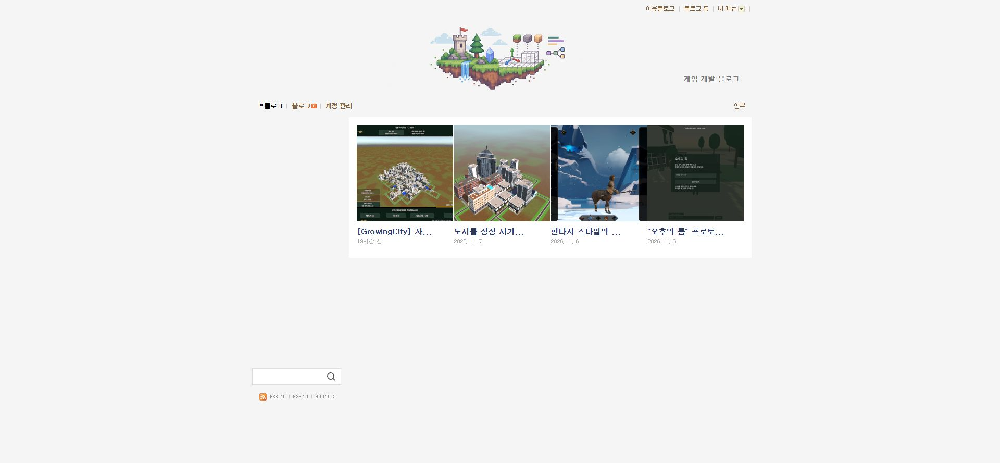
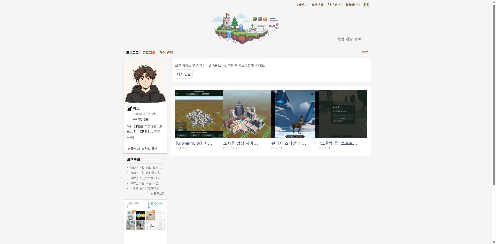
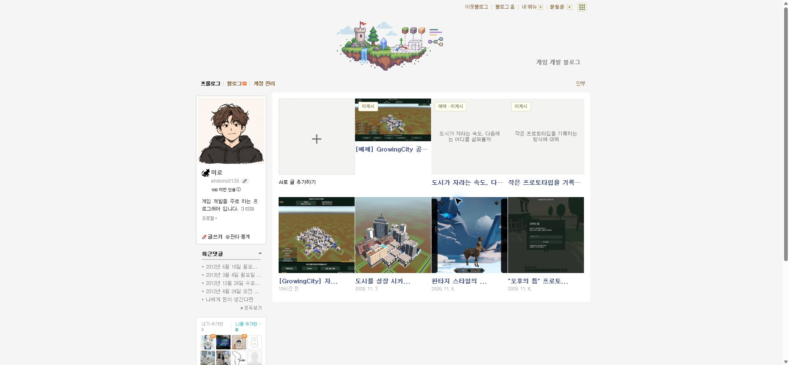
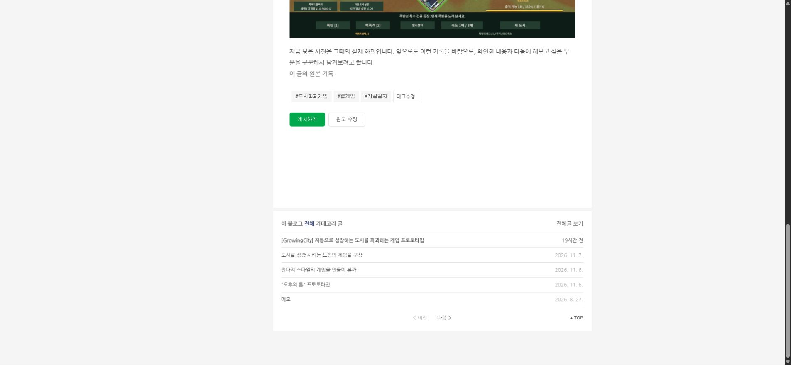
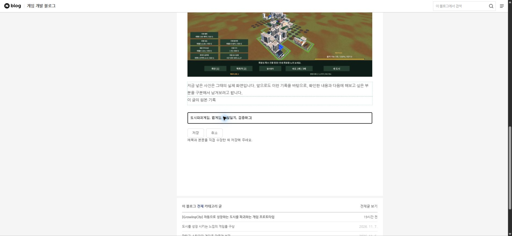
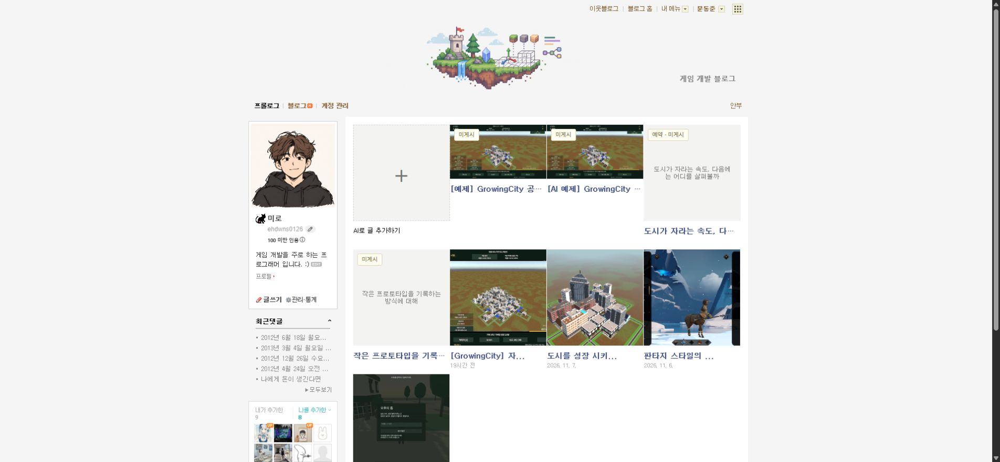
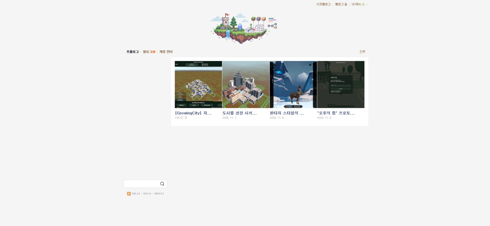
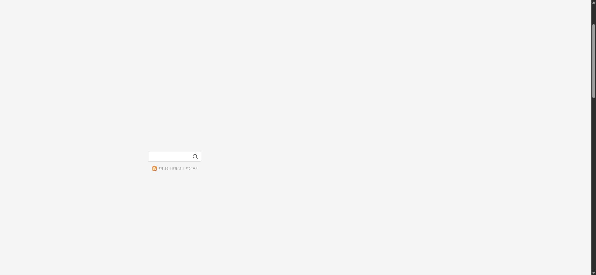

Tracefolio REPORTS & ISSUES
Tracefolio REPORTS & ISSUES미미로 블로그 매니저수정사항
네이버 확장 0.4.1 — AI 추가 카드·원본 태그·이미지 예제와 Git 보관
완료원본 목록 앞 + 카드, 단일 미게시 배지와 원본 태그를 적용하고 실제 AI 작성·이미지·오프라인 읽기·Git 푸시를 검증했습니다.
작업 결과
0.4.1 목록·직접 편집·태그·이미지·AI 작성·Git 푸시 검증을 마쳤습니다. 실제 네이버 공개 발행은 사용자 요청대로 보류합니다.

변경 내용
적용 내용
- 목록 상단 연결/원고 관리 박스와 게시물 하단 목록 버튼 제거. + AI 작성 카드와 썸네일 한 곳의 미게시/예약 배지 적용.
- 실제 네이버 .post_footer_contents .wrap_tag 및 item/pcol2/itemTagfont/ell/pcol2b 구조를 사용해 태그 박스와 태그수정을 표시합니다.
- 중앙 아카이브 GrowingCity 보고서의 실제 사진 2장을 편집 없이 복사하고 출처·SHA-256을 examples/sources.json에 보존했습니다.
- Codex CLI read-only 작성 에이전트의 하트비트·생존을 확인하며 요청이 있을 때만 모델을 실행합니다.
- 저장소가 꺼져 있으면 마지막 초안/작은 이미지 캐시로 읽기를 유지하고 + 클릭에서만 AI 꺼짐을 안내합니다. 저장·새 AI 작성에는 로컬 저장소가 필요합니다.
- 0.4.1 소스 53개 파일을 지정한 GitHub에 공개했습니다. 개인 data·로그·로그인 정보·전체 이동 ZIP은 제외했습니다.



검증
- 실제 Chrome 0.4.1: + 카드 1개, 초안 4개, 미게시 배지 한 곳, 하단 목록 버튼 0개. 편집 취소 시 제목·본문 HTML·글꼴 일치(15px/27px), 직접 저장·새로고침 유지, 이미지 2장 693px 표시와 원본 링크 보존. 저장소 종료 후 캐시 초안 4개·사진 2장 읽기와 연결 박스 없음 확인.
- Codex 실제 작성 요청 1회가 17.631초에 완료되어 이미지 1장 포함 로컬 초안 생성. 대기 에이전트 종료 및 + 클릭의 꺼짐 안내 확인. 게임 예제 사진 2장 원본 해시 보존. 250개 ZIP 해제 파일과 이동 실행 확인. 공개 소스 53개 파일을 3a9b005로 MDJ0126/blog-manager main에 푸시하고 원격 SHA 일치 확인.
- 자동 회귀 23개 통과. 블록 보존 도우미 추가 후 VM 테스트의 누락된 도우미를 보완하고 재통과했습니다.
- 실제 저장한 제목·본문·태그의 새로고침 유지, 사진 2장과 출처 링크 보존 후 검증 문장을 제거하고 예제 원문을 정확히 복원했습니다.
- 실제 실행 값 · DOM 검사 · 이동 보관본 검사





남은 사항
- 실제 네이버 공개 발행 검증은 사용자 요청에 따라 계속 보류합니다. 기존 복구 원고는 읽거나 덮어쓰지 않았습니다.
- 작업용 AI 에이전트와 이동 검증 서버는 종료했고, 저장소 서버와 확인용 블로그 탭은 사용자 확인을 위해 유지했습니다.
- 교훈: AI 상태와 저장소 상태를 구분하고 원본 UI 구조를 재사용한다는 요구를 프로젝트 AGENTS.md에 통합했습니다. 전역은 기존 실행 대조 원칙과 중복되어 변경하지 않았습니다.
- 캡처는 실제 화면 원본이며 편집/GIF 제작을 하지 않았습니다. 글꼴 버그의 동일 배율 전 화면은 확보하지 못해 사용자 신고와 취소 전후 실제 DOM/폰트 대조를 근거로 사용했습니다.
작업 시간
- 제안 시간: 2026-11-08 후속 요청 15~25분
- 실제로 완료된 시간: 시작 2026-11-08 15:23:03 Asia/Seoul. 구현·실행 기록 2026-11-08 15:44:04 Asia/Seoul. 공개 보고서 배포 확인은 별도입니다.
- XERJ: 미사용 — XERJ 도구 미제공. rg·현재 소스·실제 DOM·CLI 실행으로 대조했습니다.